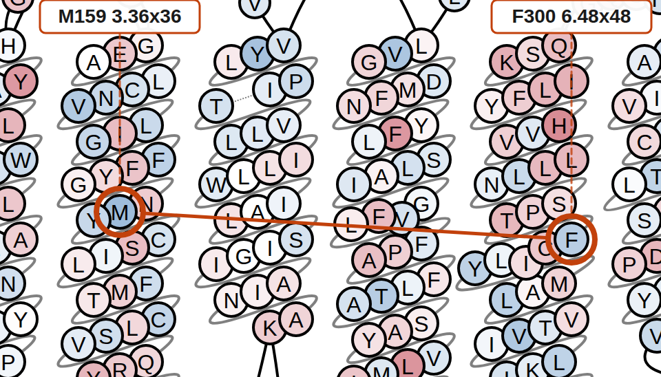
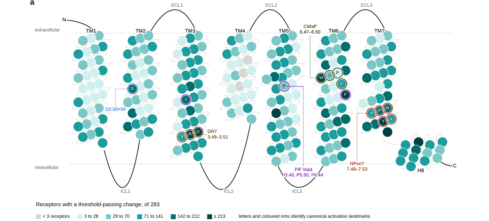

GPCompaRe database
Paired active and inactive AlphaFold-Multistate models for 283 human Class A GPCRs, compared using residue-residue contact scores (RRCS). Each report links the structural result to GPCRdb generic numbering, conservation, AlphaMissense predictions, cross-family Core Functional Residue positions, and gnomAD variation for the 279 receptors that have it.
Dataset and analysis
| Receptors | 283 | human Class A GPCRs with a complete active and inactive pair |
|---|---|---|
| Receptor families | 60 | |
| Structural models | 566 | two AlphaFold-Multistate models per receptor |
| Contact-pair records | 213,456 | residue pairs detected in either state |
| Threshold-passing changes | 23,025 | contacts exceeding their own receptor's threshold |
| Excluded | 4 | receptors without a complete active and inactive pair |
Positions and contact pairs highlighted by GPCompaRe should be interpreted as model-derived structural candidates, not direct experimental evidence of function.
How to read a GPCompaRe contact
One real contact from the PAR2 report, from the topology diagram to the number.

RRCS assigns a contact score to a residue pair from the interatomic distances within a structure. The same pair is scored in the active model and in the inactive model, and the difference is ΔRRCS: active minus inactive.
| Residue 1 | M159 3.36x36, TM3 |
|---|---|
| Residue 2 | F300 6.48x48, TM6 |
| Active RRCS | 0.67 |
| Inactive RRCS | 5.66 |
| ΔRRCS | −4.99 |
| PAR2 threshold | 2.60, so this contact passes |
| Rank in PAR2 | 27th of 776 contact pairs by |ΔRRCS|, so not the largest change in this receptor |
The contact is stronger in the inactive model, so it is blue. Contacts stronger in the active model are red.
F300 occupies the aromatic 6.48 toggle-switch position, one of the canonical activation landmarks. Both residues sit in transmembrane helices.
Core Functional Residues across Class A GPCRs

A receptor-level Core Functional Residue (CFR) is a residue that participates in at least one contact whose absolute ΔRRCS passes that receptor's own threshold.
Mapping those receptor-level CFRs onto GPCRdb generic positions gives recurrent CFR positions across the family. A position is counted as recurrent when it is identified as a CFR in at least three receptors.
That mapping needs a GPCRdb generic number. The cross-receptor recurrence statistics reported here are the results submitted with the manuscript, computed on the full GPCRdb residue maps for all 283 receptors, so they are not limited by how much of a receptor its own annotation file numbers.
No motif was selected in advance. The cross-receptor analysis recovers established parts of the DRY, NPxxY and CWxP activation machinery on its own.
What each receptor report contains
- An interactive snake plot with selectable colour views and contact arcs
- Contact pairs ranked by |ΔRRCS|, with the active RRCS, the inactive RRCS and the difference, up to 1,000 rows
- The receptor's own threshold, and which contacts pass it
- Cross-family Core Functional Residue positions mapped onto this receptor
- GPCRdb generic numbering
- Sequence conservation
- gnomAD missense variation at contact-forming residues, for the 279 receptors that have variant data
- AlphaMissense pathogenicity predictions
- Ranked tables with CSV export
Use the search above to open a receptor. Example reports: ADRB2, PAR2.
Analysing your own structures
Alongside the database, GPCompaRe covers analysis of your own paired active and inactive structures, applying the same RRCS comparison used to build this database and writing standalone HTML and CSV output.
A releasable version of that program is not yet available. Analyses you run locally would stay local: they are not added to the public database.
Methods and data sources
Structures are paired active-state and inactive-state models from AlphaFold-Multistate. Contacts are scored with RRCS. Generic numbering and segment boundaries come from GPCRdb. Population variation comes from gnomAD v4, pathogenicity predictions from AlphaMissense, and conservation from ProtVar and UniProt.
Each receptor has its own ΔRRCS threshold, computed as max(mean(|Δ|) + σ, 0.2).
566 models were analysed, two per receptor. Four further receptors listed in the Class A reference set are excluded because they lack a complete active and inactive pair: GPR26, LGR5, OPSX and RXFP1.
Version, downloads and citation
- Release
- GPCompaRe database release 2026.08
- DOI
- DOI pending release
- Downloads
- Database release and analysis software
- Contact
- Contact the lab
GPCompaRe was developed as the companion resource for the associated study. Corrections and substantial updates will be documented as new releases. No fixed update schedule is currently planned.